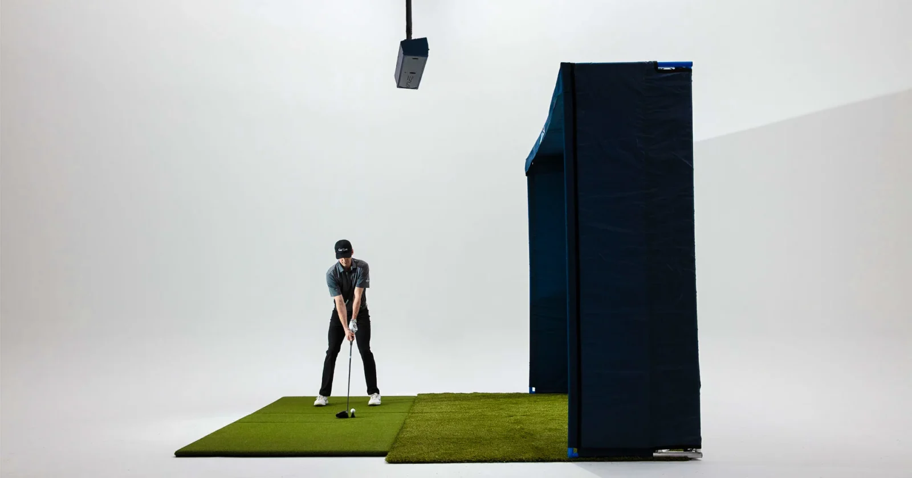

Immersive screen
A broad impact screen puts the course at the center of your playing space.

SIMULATORS / TRUGOLF MAX
A dedicated simulator experience for the space you want to make your own.
Explore configurationsTHE FLAGSHIP EXPERIENCE
MAX pairs a 15-foot edge-to-edge screen with TruGolf tracking and E6 software. Its bespoke setup options make it a fit for dedicated home golf rooms and commercial simulator bays.
A broad impact screen puts the course at the center of your playing space.
Build around a TruGolf launch monitor that fits the way your bay will be used.
Work with the TruGolf team to plan the configuration for your space and needs.
CHOOSE YOUR CONFIGURATION
The standard MAX simulator configuration. Confirm the included components with the product listing.
A MAX package with a PC included, bringing the technology setup together.
Explore the 4K configuration for a higher-resolution simulator presentation.
Confirm room clearance, hitting position, projector placement, and power with the TruGolf team. Package contents and software subscriptions vary by configuration.
Find MAX manuals & setup videosYOUR NEXT ROUND STARTS HERE